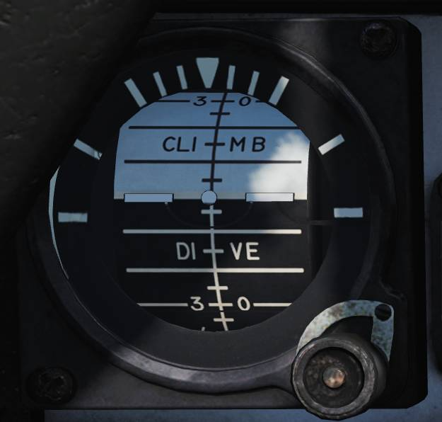

Left Instrument Panel
Servopneumatic Altimeter

The servopneumatic altimeter provides altitude indication using both electrical and pressure-based systems.
Altimeter Readout
The altimeter readout (
A pointer on the circular scale provides continuous indication in hundreds of feet.
Baroset Knob
The baroset knob (
This setting only affects the local altimeter display. Other CADC-driven digital indicators use a fixed 29.92 in.Hg reference.
Local Barometric Pressure Window
The local barometric pressure window (
Mode Switch
The mode switch (
- RESET - When CADC power and altitude data are available, holding RESET for approximately three seconds enables normal servoed operation.
- STBY - Selects backup pressure mode.
If CADC data or electrical power is absent for more than three seconds, the system automatically reverts to standby mode.
STBY Flag
The STBY flag is a red standby indication that appears when the altimeter is operating in backup (standby) mode (not visible in this image).
💡 At high speeds and below 10,000 feet, pressure effects can produce significant readout errors: up to 1,200 feet when transonic and up to 4,000 feet when supersonic.
Airspeed Mach Indicator

The airspeed Mach indicator displays indicated airspeed and Mach number.
Airspeed Dial
The airspeed dial (
Outer Airspeed Scale
The outer indicated airspeed scale (
Inner Airspeed Scale
The inner airspeed scale (
This scale remains covered by the dial until applicable.
Mach Number Scale
The Mach number scale (
Indicated Airspeed Index Pointer
The indicated airspeed index pointer (
Mach Number Index Pointer
The Mach number index pointer (
(Not visible in the referenced image.)
Safe Mach Number Index Pointer
The safe Mach number index pointer (
(Not visible in the referenced image.)
Index Selector Knob
The index knob (
One position adjusts the airspeed index pointer, and the other adjusts the Mach index pointer.
Standby Attitude Indicator

The standby attitude indicator provides independent attitude reference.
OFF Flag
The OFF flag (
Cage and Trim Knob
The cage and trim knob (
- Pulled out - Indicator is caged.
- Pushed in - Indicator is uncaged and pitch trim may be adjusted by rotating the knob.
UHF Remote Indicator

The UHF remote indicator provides a cockpit readout of ARC-159 radio tuning.
The remote display shows the selected frequency or preset channel for UHF 1.
The TEST button initiates an indicator self-test. A successful test results in a display of 888.888.
The DIM knob controls indicator display brightness.